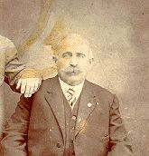

 Leonardo STRAZZA (1857-) |
Leonardo STRAZZA
Leonardo married Isabella GIALINELLI, daughter of Pasquale GIALINELLI and Angeline PETRUCCI, about 1881.1 (Isabella GIALINELLI was born on 27 Aug 1861 in Naples, Italy 4 5, died on 18 Oct 1933 in Pittsburgh, Allegheny, PA 5 6 7 and was buried in Calvary Cemetery, Pittsburgh, PA 7.) |
1 Pennsylvania, Allegheny County, 1900 U.S. Census, Population Schedule, (Washington, D.C., National Archives and Records Administration), ED 257, Sheet 4, Line 22.
2 Noelle Calabro, The Calabro and Yalenty Families (unpublished), (Pittsburgh, PA, 2 May 1977).
3 Ira A. Glazier and P. William Filby, Italians to America, Lists of Passengers Arriving at US Ports, 1880-1900, (Scholarly Resouces, Inc., Wilmington, DE, 1993), Vol. 3 - July 1887-June 1889.
4 Pennsylvania, Allegheny County, 1910 U.S. Census, Population Schedule, (Washington, D.C., National Archives and Records Administration), ED 528, Sheet 2, Line 81.
5 Commonwealth of Pennsylvania, Department of Health, Bureau of Vital Statistics, Death Certificate - Elizabeth (Gialinelli) Strazza, (20 Oct 1933).
6 Funeral Home, Mass Card, (Obtained from Helen (Yalenty) LaMarca).
7 Thomas Hoey, Oral Interview of Evelyn Strazza, (Pittsburgh, PA, 29 Jun 2000).
Home | Italian Roots | Name List
This Web Site was Created 1 Jan 2001 with Legacy 4.0 from Millennia
{kind=link}